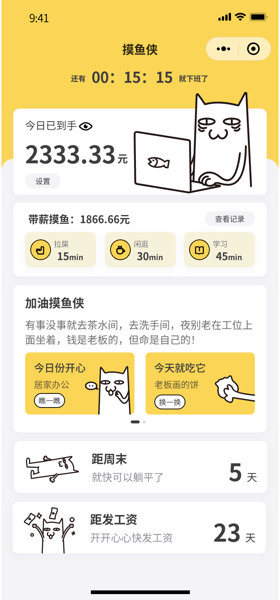

AI 工作流引擎与编排平台
面向跨境商品生产，定义原子能力与可视化/模板化编排，引入「人工审核 + AI 执行」混合机制。浏览器采集插件作为数据入口，打通采集→清洗→AI 处理→上架。
500→4000日均开款量
10→40人均管理店铺
80%+核心流程覆盖
9 年+ 互联网产品经验，跨境电商 / 建站 SaaS / AI 应用。从 0→1 定义 AI 能力、编排工作流，也做可视化编辑器与平台型产品。
看核心项目 →CORE PROJECTS · 核心项目
面向跨境商品生产，定义原子能力与可视化/模板化编排，引入「人工审核 + AI 执行」混合机制。浏览器采集插件作为数据入口，打通采集→清洗→AI 处理→上架。
SHOPLINE 主题编辑器：把页面组件原子级拆解与标准化，扩展 Flexbox 布局模型，支持多市场差异化装修，并搭建主题商城生态。




个人产品实践，已验证到百万级用户规模。
 扫码查看小程序
扫码查看小程序ABOUT
做过跨境电商的 AI 自动化平台、独立站可视化编辑器、奢侈品官网的 Page Builder；也长期泡在真实业务里，把分散场景抽象成可复用的平台能力。近年在把 AI 生成原型、Agent 工作流与插件开发做成日常工具。
英语专业八级，可独立对接海外团队；持续把自己的实践开源。
 用 DSH 把需求生成可编辑画布
用 DSH 把需求生成可编辑画布
 dsh-trafficlight 已上架插件市场
dsh-trafficlight 已上架插件市场